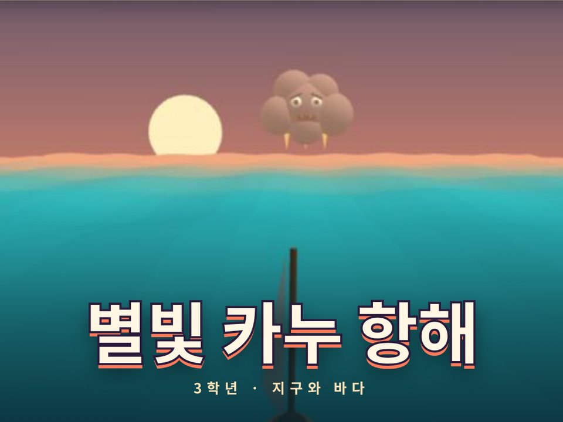
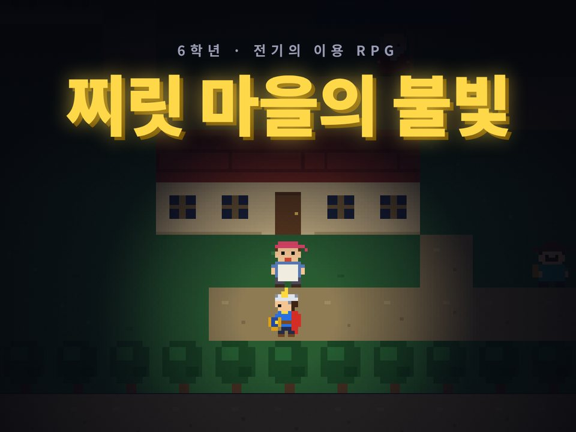
혼자각자 자기 속도로
별빛 카누 항해(3학년) · 찌릿 마을의 불빛(6학년)
- QR만 찍으면 끝. 학생마다 따로 플레이해요.
- 복습 시간, 일찍 끝난 학생 활동으로 좋아요.
선생님 설명서
처음 쓰시는 선생님도 5분이면 돼요. 사진을 보면서 그대로 따라 해 보세요.
교실 컴퓨터(TV에 연결된 컴퓨터)에서 크롬이나 웨일을 열고 이 주소를 들어가요.
hyungame.duckdns.org/arcade 즐겨찾기에 넣어 두면 다음부터는 한 번에 열려요. 학생 계정이나 로그인은 필요 없어요.
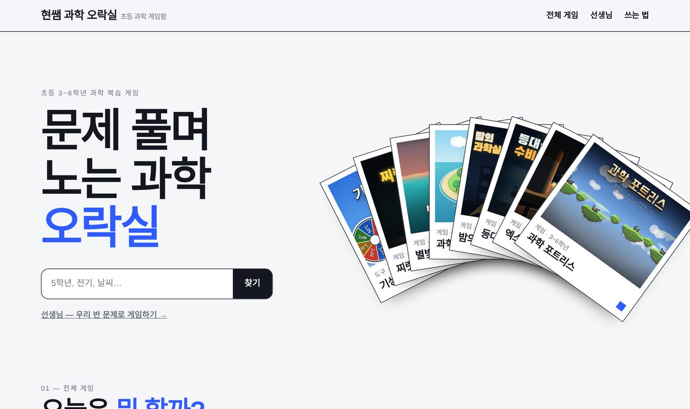
화면을 조금 내리면 게임 카드가 나와요. 위쪽 버튼으로 학년과 종류(혼자·협동·대전·수업 도구)를 고르면 맞는 게임만 남아요.
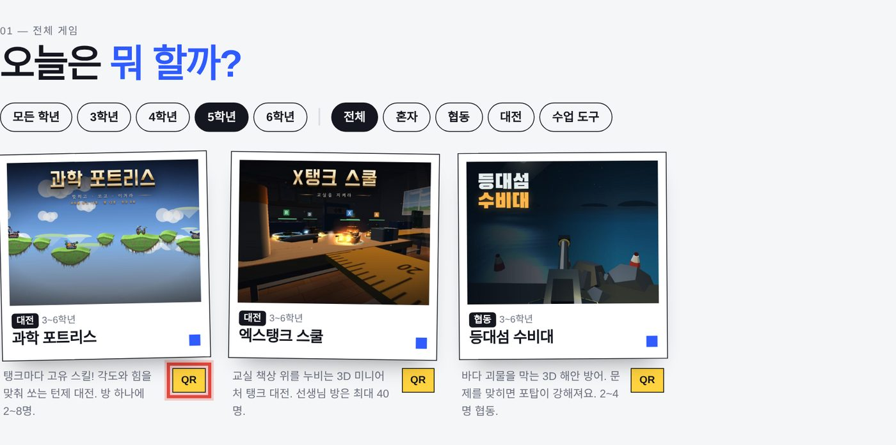
할 게임 카드 아래 QR을 누르면 큰 QR 창이 떠요. 이 화면을 TV에 띄워 두세요.

학생은 이렇게 해요
카드 왼쪽 위에 적힌 종류를 보면 어떻게 진행할지 알 수 있어요.


별빛 카누 항해(3학년) · 찌릿 마을의 불빛(6학년)
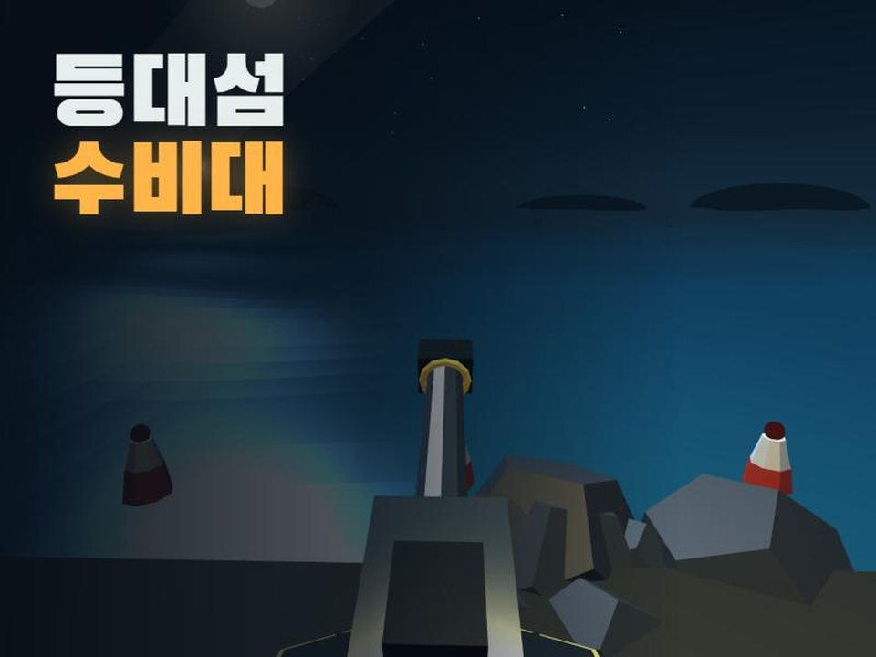
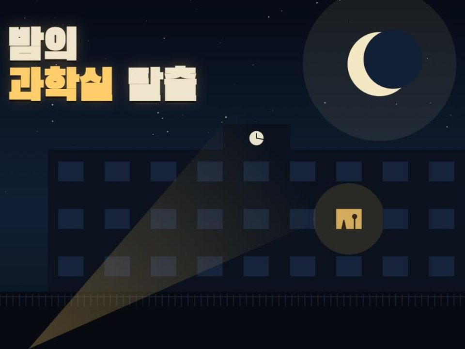
등대섬 수비대 · 밤의 과학실 탈출 · 과학섬 생활
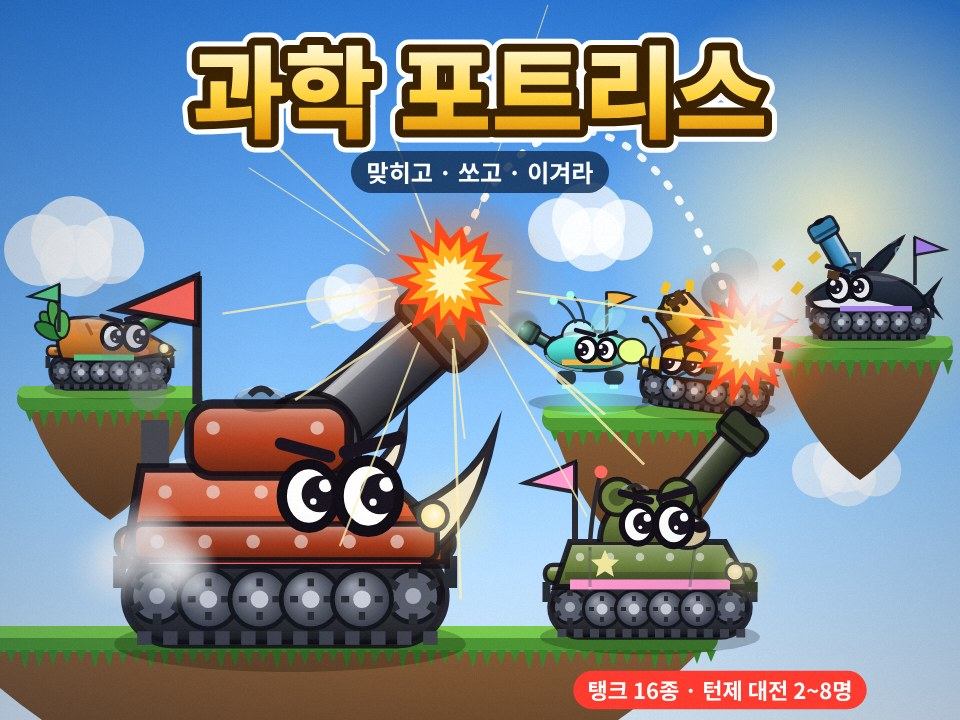
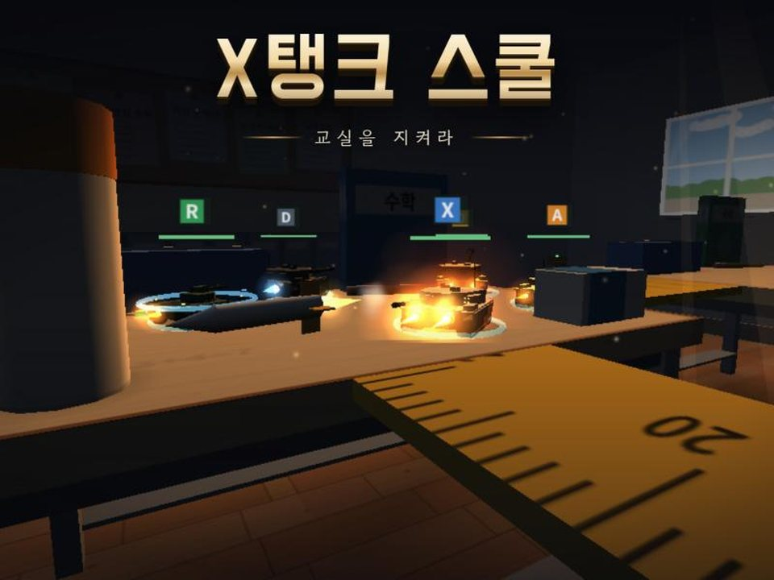
과학 포트리스 · 엑스탱크 스쿨
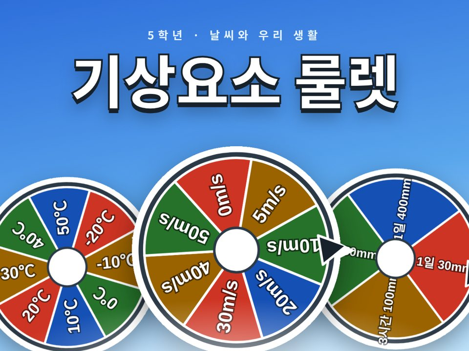
기상요소 룰렛(5학년 날씨)
기본 문제만으로도 바로 쓸 수 있어요. 선생님이 만든 문제로 하고 싶을 때만 해 주세요. 오락실 첫 화면의 선생님 메뉴에서 세 단계로 끝나요.
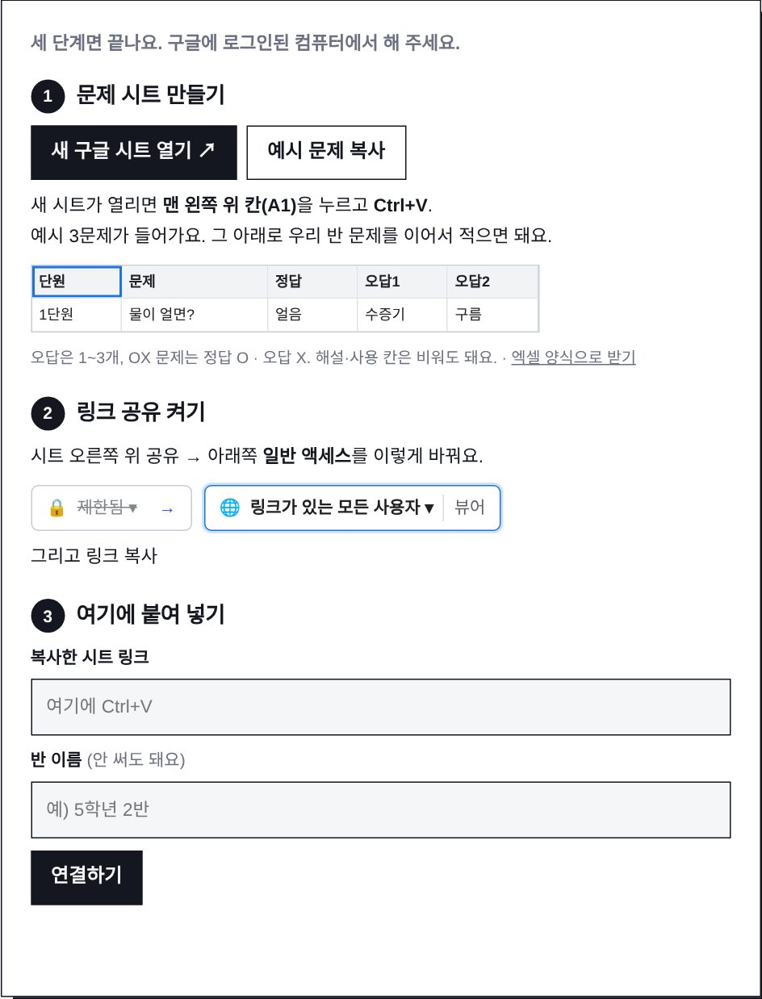
구글을 안 쓰면 엑셀로도 돼요. 선생님 칸 아래 엑셀로 우리 반 문제 넣기를 누르세요. (이 방법은 그 컴퓨터에만 저장돼요)
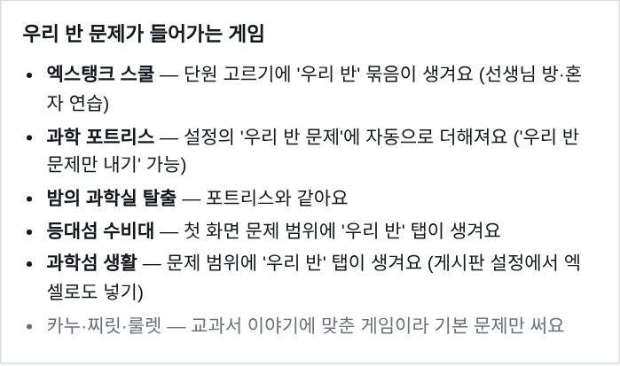
QR 창의 주소 복사를 눌러 칠판·클래스룸·패들렛에 붙여 주세요. TV 화면이 너무 밝거나 멀면 잘 안 찍히니 학생이 조금 가까이 와서 찍게 해 주세요.
키보드 Ctrl+F5를 한 번 눌러 새로 고침 해 주세요.
학생 기기에서 다른 탭을 닫고 새로 고침 해 주세요. 협동·대전 게임은 방을 만든 기기가 느리면 방 전체가 느려지니, 방장은 성능 좋은 기기로 정해 주세요.
게임 설정을 선생님 비밀번호로 잠가 주세요. 선생님이 고른 단원·난이도만 학생에게 나와요.
① 시트 공유가 '링크가 있는 모든 사용자'인지 ② 연결한 그 컴퓨터에서 QR을 띄웠는지 ③ 학생이 처음에 오락실 QR로 들어왔는지 확인해 주세요. 포트리스·탈출은 설정의 '우리 반 문제만 내기'를 켜면 우리 반 문제만 나와요.
네, 브라우저가 있으면 돼요. 다만 3D 게임은 크롬북·웨일북·태블릿처럼 화면이 큰 기기가 더 편해요.